Part 3: Modular Performance Analysis
Contents
Introduction
Modular Performance Analysis (MPA) with Real-Time Calculus is used to analyze the performance of hard real-time systems. In particular, MPA can be used for example to analyze end-to-end delays, buffer requirements or throughput of such systems.
The central idea of Modular Performance Analysis is, to first build a so-called performance model of the concrete system that bundles all information needed for performance analysis with Real-Time Calculus. The abstract performance model thereby unifies essential information about the environment, about the available computation and communication resources, about the application tasks and dedicated HW/SW components, as well as about the system architecture itself.
Within the system performance model, environment models describe how a system is being used by the environment: how often will events (or function calls) arrive and how much data is provided as input to the system, and how many events and how much data is generated in return by the system and is fed back to the environment. Resource models provide information about the properties of the computing and communication resources that are available within a system, such as processor speed and communication bus bandwidth. And finally, application task models or dedicated HW/SW component models provide information about the processing semantics that is used to execute the various application tasks or to run the dedicated HW/SW components. The system model that is typically obtained following the well-known Y-Chart scheme specifies how the different models are put together to build the system performance model. The system model thereby captures information about the applications and the available hardware architecture of the system, and it also defines the mapping of tasks to computation or communication resources and specifies the scheduling and arbitration schemes used on these resources. After interconnecting all models of a system to the system performance model as described above, this performance model captures all the information that builds the basis for performance analysis. Various performance criteria, such as end-to-end delay guarantees or buffer requirements can be computed analytically in the performance model. The exact analysis methods may thereby vary for different components, but remains deterministic at all times.
For more information on Modular Performance Analysis, please refer to one of the following publications:
E. Wandeler, L. Thiele, M. Verhoef, and P. Lieverse. System Architecture Evaluation Using Modular Performance Analysis - A Case Study. Software Tools for Technology Transfer, 2005. In press.
E. Wandeler. Modular Performance Analysis and Interface-Based Design for Embedded Real-Time Systems. PhD thesis, ETH Zurich, September 2006.
S. Chakraborty, S. Künzli, and L. Thiele. A general framework for analysing system properties in platform-based embedded system designs. In Proc. 6th Design, Automation and Test in Europe (DATE), Munich, Germany, March 2003.
Curve Sets
The Modular Performance Analysis framework consistently uses a set of an upper as well a lower curve to model event streams or resources. To conveniently work with these curve sets, many functions within the RTC Toolbox are designed to also work with 2x1-matrices of curves, where the first curve element corresponds to an upper curve, and the second curve element corresponds to a lower curve: c_set = [c_upper; c_lower]
Event-Stream Models
The rtcpjd function can be used to create the arrival curve set that corresponds to an event stream with a period p, a jitter j, and a minimum event inter-arrival distance d. Note that the functions rtcpjdu and rtcpjdl can be used to create only the upper or the lower arrival curve of such an event stream, respectively.
a = rtcpjd(3, 5, 1);
rtcplot(a, 'r', 20);
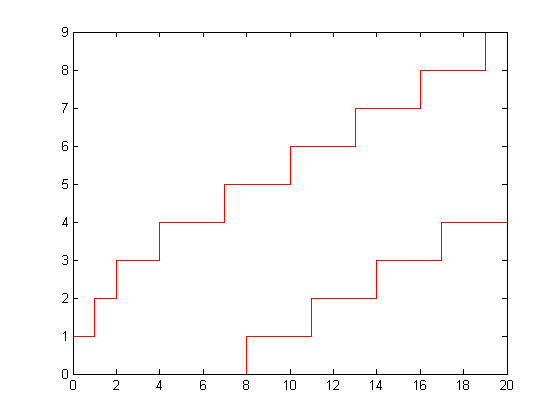 Resource Models
The rtcfs function creates the service curve set that corresponds to a resource with bandwidth B that is fully available. Note that rtcfsu and rtcfsl can be used to create only the upper or the lower service curve of such a resource, respectively.
b = rtcfs(0.3);
rtcplot(b, 'b', 20);
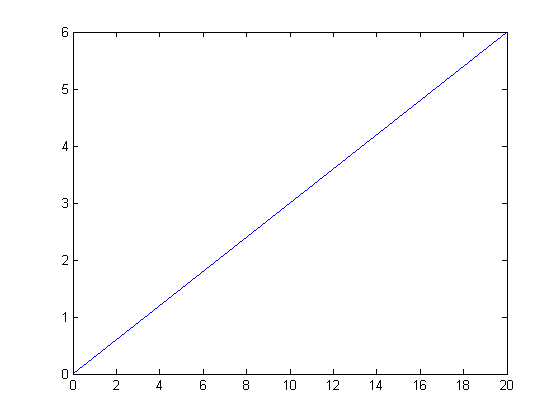 The rtcbd function creates the service curve set that corresponds to a bounded delay resource with a maximum delay d and a bandwidth B. Note that rtcbdu and rtcbdl can be used to create only the upper or the lower service curve of such a resource, respectively.
b = rtcbd(4, 0.3);
rtcplot(b, 'b', 20);
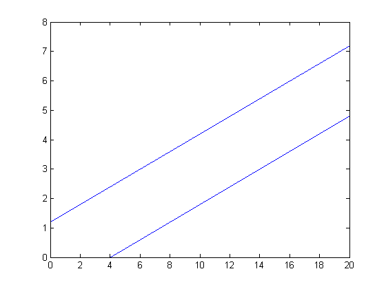 The rtcps function creates the service curve set that corresponds to a periodic resource, where a share of s is allocated within every period p, on a resource with total bandwidth B. Note that rtcpsu and rtcpsl can be used to create only the upper or the lower service curve of such a resource, respectively.
b = rtcps(2, 5, 1);
rtcplot(b, 'b', 20);
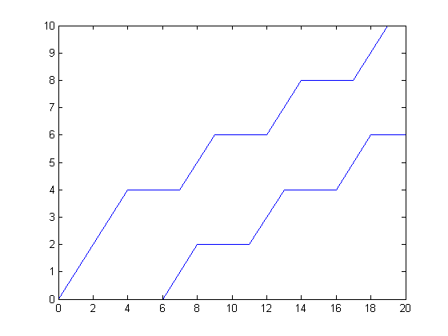 The rtctdma function creates the service curve set that corresponds to a TDMA resource, where a slot of length s is allocated within every TDMA cycle c, on a resource with total bandwidth B. Note that rtctdmau and rtctdmal can be used to create only the upper or the lower service curve of such a resource, respectively.
b = rtctdma(2, 5, 1);
rtcplot(b, 'b', 20);
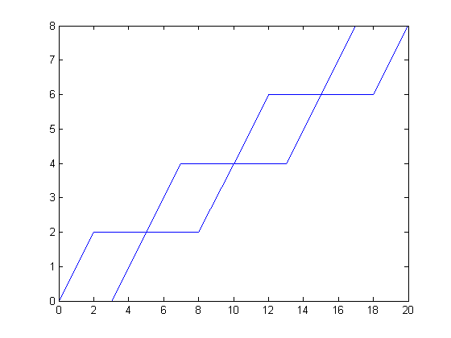 HW/SW Component Models
The rtcgpc function computes the output of a greedy processing component. A greedy processing component is commonly used to model a single preemptive task running under a fixed priority scheduling policy. But by choosing different service curves one can also represent the functionality of various kinds of (periodic) servers and TDMA scheduling units.
A task has an execution resource demand ed, is triggered by a discrete event stream that is modeled as an arrival curve a, and is executed on a resource with a service that is modeled as a service curve b. For such a task, the rtcgpc function computes the arrival curve of the outgoing discrete event stream, as well as the service curve of the remaining service. In addition, the rtcgpc function determines the maximal delay of events and the maximal buffer space requirement.
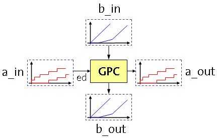
a_in = rtcpjd(3, 0, 0); b_in = rtctdma(2, 7, 4); ed = 3; [a_out b_out del buf] = rtcgpc(a_in, b_in, ed);
disp(['delay = ',num2str(del), '; buffer = ',num2str(buf)]);
delay = 6.25; buffer = 3
subplot(2,1,1); rtcplot(a_in, 'r', a_out, 'g', 20); title('a\_in (red); a\_out (green)'); subplot(2,1,2); rtcplot(b_in, 'b', b_out, 'g', 20); title('b\_in (blue); b\_out (green)');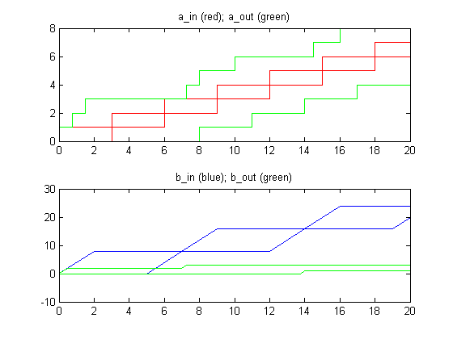
The rtcedf function computes the output arrival curve, remaining service, maximal delays and buffer space requirements for an EDF component. Here, the tasks corresponding to the events of the input streams are computed with dynamic priorities that corresponds to the earliest deadlines. Again, tasks are supposed to be preemptive.
The function takes as input arguments the arrival curves of all n input streams a1_in, ..., an_in, the corresponding execution demands ed1, ..., edn, all deadlines d1, ..., dn associated to the events in the streams and the service curve b_in. As results we get the output arrival curves, the worst-case event delays, the necessary buffer spaces and the remaining service.
As in the case of the greedy processing element, ed = [wced bced] denotes the worst case and best case execution demands of events. The execution demand can be a scalar: In this case we have wced = bced (worst case execution demand = best case execution demand).
The rtcedf function issues a warning if the given task set is not schedulable under EDF.
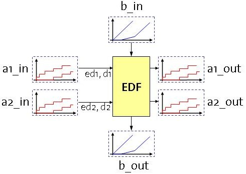
a1_in = rtcpjd(3, 0, 0); a2_in = rtcpjd(7, 0, 0);
b_in = rtctdma(3, 7, 4);
ed1 = 3; ed2 = 1;
d1 = 8; d2 = 6;
[a1_out del1 buf1 a2_out del2 buf2 b_out] = ...
rtcedf(a1_in, ed1, d1, a2_in, ed2, d2, b_in);
disp(['del1 = ',num2str(del1), '; buf1 = ',num2str(buf1)]); disp(['del2 = ',num2str(del2), '; buf2 = ',num2str(buf2)]);
del1 = 5; buf1 = 2 del2 = 5.75; buf2 = 1
subplot(2,2,1); rtcplot(a1_in,'r',a1_out,'g',20); title('a1\_in (red); a1\_out (green)'); subplot(2,2,2); rtcplot(a2_in,'r',a2_out,'g',40); title('a2\_in (red); a2\_out (green)'); subplot(2,2,3); rtcplot(b_in, 'b', b_out, 'g', 40); title('b\_in (blue); b\_out (green)');
There is also a function that implements the abstract properties of a FIFO component. In this case, the inputs are processed in the order of their arrival at the component. We can just use the example above and replace the rtcedf function the rtcfifo. Of course, no deadlines are necessary now.
[a1_out del1 buf1 a2_out del2 buf2 b_out] = ...
rtcfifo(a1_in, ed1, a2_in, ed2, b_in);
Finally, we determine the delay and buffer values and plot the various curves as above:
disp(['del1 = ',num2str(del1), '; buf1 = ',num2str(buf1)]); disp(['del2 = ',num2str(del2), '; buf2 = ',num2str(buf2)]);
del1 = 5; buf1 = 2 del2 = 5; buf2 = 1
subplot(2,2,1); rtcplot(a1_in,'r',a1_out,'g',20); title('a1\_in (red); a1\_out (green)'); subplot(2,2,2); rtcplot(a2_in,'r',a2_out,'g',40); title('a2\_in (red); a2\_out (green)'); subplot(2,2,3); rtcplot(b_in, 'b', b_out, 'g', 40); title('b\_in (blue); b\_out (green)');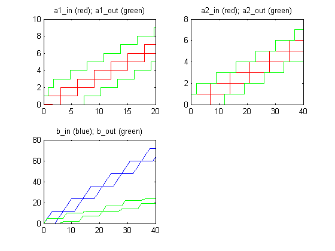
The rtcgsc function computes the output of a greedy shaper component. A greedy shaper component shapes a discrete event stream that is modeled as an arrival curve a with a shaping curve sigma. That is, a greedy shaper delays the events of the input event streams, such that the output event stream has s as an upper arrival curve, and it delays no event any more than necessary. Again, the result of rtcgsc also contains the maximal event delay and the buffer requirement.
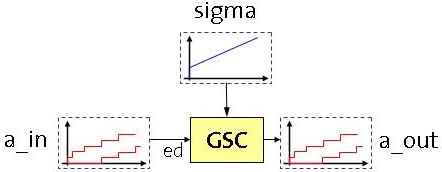
a_in = rtcpjd(3, 7, 0.5); sigma = rtccurve([0 0 0.7]); [a_out del buf] = rtcgsc(a_in, sigma);
disp(['delay = ',num2str(del), '; buffer = ',num2str(buf)]);
delay = 2.2857; buffer = 2
subplot(1,1,1); rtcplot(a_in, 'r', sigma, 'b', a_out, 'g', 20);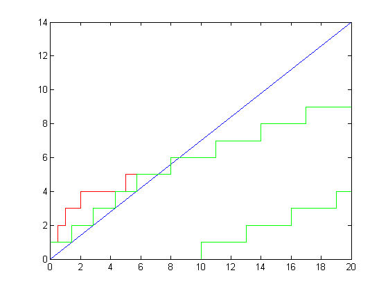
Performance Analysis
The rtcdel function computes the maximum delay that is experienced by an event on a discrete event stream with arrival curve a that is processed by a task with execution resource demand ed that is modeled as a greedy processing component (GPC) and that runs on a resource with service curve b. The rtcdel function can also compute the maximum end-to-end delay that is experienced by an event stream when processed on n consecutive GPC's. Note that this latter computation sometimes leads to long execution times within the RTC Toolbox. Moreover, depending on the system, the resulting end-to-end delay is sometimes smaller than the sum of the individual delays. In this case, the sum of the individual delays provides the tighter bound to the end-to-end delay.
Let us first compute the maximum delays of events from a stream with arrival curve a_in when passing a chain consisting of two GPCs with service b1_in and b2_in.
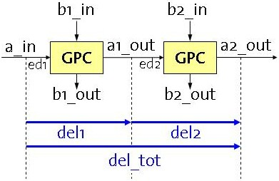
a_in = rtcpjd(3, 0, 0); b1_in = rtctdma(2, 7, 4); ed1 = 3; [a1_out b1_out del1 buf1] = rtcgpc(a_in, b1_in, ed1); b2_in = rtcbd(1, 2); ed2 = 5; [a2_out b2_out del2 buf2] = rtcgpc(a1_out, b2_in, ed2); disp(['del1 = ', num2str(del1), '; del2 = ', num2str(del2)]); disp(['del1 + del2 = ', num2str(del1+del2)]);
del1 = 6.25; del2 = 7 del1 + del2 = 13.25
Now, we use the function rtcdel in order to get tighter bounds on the end-to-end delay of this chain.
del_e2e = rtcdel(a_in, b1_in, ed1, b2_in, ed2);
disp(['del_e2e = ', num2str(del_e2e)]);
del_e2e = 9.75
The rtcbuf function computes the maximum buffer requirement to buffer a discrete event stream with arrival curve a that is processed by a task with execution resource demand ed that is modeled as a greedy processing component (GPC) and that runs on a resource with service curve b. The rtcbuf function can also compute the maximum buffer space that is necessary when an event stream is processed on n consecutive GPC's, if their input queues all access the same shared memory. Note that again this latter computation sometimes leads to long execution times within the RTC Toolbox. Moreover, depending on the system, the resulting total buffer requirement is sometimes larger than the sum of the individual buffer requirements. In this case, the sum of the individual buffer requirements provides the tighter bound to the total buffer requirement.
To see this, we can use the same example as above. The individual buffer space requirements have been computed already:
disp(['buf1 = ', num2str(buf1), '; buf2 = ', num2str(buf2)]); disp(['buf1 + buf2 = ', num2str(buf1+buf2)]);
buf1 = 3; buf2 = 3 buf1 + buf2 = 6
Now, we can use rtcbuf to compute a tighter bound if all buffers share the same memory:
buf_sha = rtcbuf(a_in, b1_in, ed1, b2_in, ed2);
disp(['buf_sha = ', num2str(buf_sha)]);
buf_sha = 4
Structured Event Streams
Structured event streams are streams which consist of multiple substreams that need to be decomposed into individual streams at a later stage. This can be used in the context of packetizing different data streams and transmitting them over a communication channel. The Event Count Curves (ECCs) are one way to describe the structure of an event stream that consists of several substreams. A structured event stream is obtained when the events of two or more simple event streams are joined in a FIFO manner, i.e. combined with an OR-activation unit. The Event Count Curves bound the number of events related to one specific input stream (sub-stream). For a fixed number of consecutive events in the combined stream, they give the minimum and maximum number of events related to this individual stream. Therefore, we can use the ECCs to decompose the structured event stream.
With the operator rtcjoin individual streams can be combined into a structured event stream. We obtain the combined stream and in addition a pair of Event Count Curves for each input stream. The operator rtcfork can then be used to decompose the structured event stream given the individual ECCs.
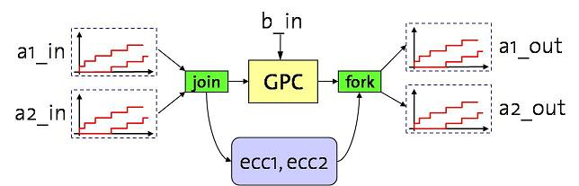
a1_in = rtcpjd(10,2); a2_in = rtcpjd(8,1); b_in = rtcfs(1); ed = 1; [a_in ecc1 ecc2] = rtcjoin(a1_in, a2_in); [a_out b_out del buf] = rtcgpc(a_in, b_in, ed); [a1_out a2_out] = rtcfork(a_out, ecc1, ecc2);
Both the rtcjoin and the rtcstruct operators can be applied in a hierarchical manner. For instance, given two structured event streams, we can join them once more by simply ignoring their structure, i.e. by treating them as simple event streams. The result is a hierarchy (a tree) of ECCs.
a3_in = rtcpjd(10,1); a4_in = rtcpjd(12,3); a5_in = rtcpjd(16,4); [a_in_1 ecc11 ecc12] = rtcjoin(a1_in, a2_in); [a_in_2 ecc21 ecc22 ecc23] = rtcjoin(a3_in, a4_in, a5_in); [a_in ecc1 ecc2] = rtcjoin(a_in_1, a_in_2); [a_out b_out del buf] = rtcgpc(a_in, b_in, ed); [a_out_1 a_out_2] = rtcfork(a_out, ecc1, ecc2); [a1_out a2_out] = rtcfork(a_out_1, ecc11, ecc12); [a3_out a4_out a5_out] = rtcfork(a_out_2, ecc21, ecc22, ecc23);
In some cases, however, it is useful to avoid such a hierarchic organization of ECCs, meaning that we may want to keep the hierarchy of ECCs flat. For instance, we might want to join two structured event streams and compute ECCs for each simple substream (with respect to the overall stream). This can be done by means of the function rtcjoinstruct. Analogously, the function rtcforkstruct can be used to separate a structured event stream into two structured substreams, where the structured substreams consist of an arbitrary combination of the simple substreams.
[a_in_1 ecc11 ecc12] = rtcjoin(a1_in, a2_in); [a_in_2 ecc21 ecc22 ecc23] = rtcjoin(a3_in, a4_in, a5_in); [a_in ecc1 ecc2 ecc3 ecc4 ecc5] = rtcjoinstruct(2, 3, a_in_1, a_in_2, ecc11, ecc12, ecc21, ecc22, ecc23); [a_out b_out del buf] = rtcgpc(a_in, b_in, ed); [a_out_I a_out_II ecc_I_1 ecc_I_2 ecc_I_3 ecc_I_4 ecc_II_1] = rtcforkstruct(4, 1, a_in, ecc1, ecc2, ecc3, ecc4, ecc5); [a1_out a2_out a3_out a4_out] = rtcfork(a_out_I, ecc_I_1, ecc_I_2, ecc_I_3, ecc_I_4); a5_out = a_out_II;
The above example shows that the operators rtcjoinstruct and rtcforkstruct are more general than rtcjoin and rtcfork because they permit to fork a structured stream in a different way than it was generated. In other words, when forking a stream new structures of substreams can be formed.
Approximation of Curves
Realistic arrival and service curves can be very complex. Even though the RTC Toolbox uses a very efficient curve representation, working with complex curves can significantly slow down all computations. Similarly, working with curves which consist of many segments (hundreds of thousands) can lead to Java 'out of memory' errors if the memory available for the JVM in Matlab is not sufficient to accommodate the large curves. One way to solve these problems is to approximate the used curves with curves that have fewer segments. The results computed with such simpler curves will be more pessimistic but still valid. Therefore the approximations need to be done correctly, i.e. upper curves should be approximated from above and lower curves from below.
The RTC Toolbox provides the functions rtcapprox and rtcapproxs which implement correct approximations. rtcapprox approximates a tuple of curves. This is consistent with the rest of the RTC Toolbox which works with curve sets as explained earlier. rtcapproxs approximates a single curve.
Let us take a closer look at the function rtcapprox. The first input parameter c is a 2x1 matrix of an upper curve and a lower curve. It is necessary that the matrix is of the kind: [upper; lower] since the first curve will be approximated from above and the second from below. The second input parameter px0New is the end of the aperiodic parts of the two curves (or the start of the periodic parts). If px0New equals zero, then the approximations will not have aperiodic parts. The third parameter pdxNew is the period for the periodic parts of the two curves. If pdxNew equals zero, then the approximations will not have periodic parts after px0New but only a single segment. If both px0New and pdxNew are equal to zero, then the approximations are only single segments.
Consider the upper curve:
A = rtccurve([[0,7,4];[2,15,3.5];[4,22,3];[6,28,2.5]], [[0 1 0];[2 2 1]], 8, 33, 4, 10);
and consider the lower curve:
B = rtccurve([[0,0,0];[2,0,0.5];[4,1,1];[6,3,1.5];[8,6,2]], [[0 0 0];[2 2 3]], 10, 12, 5, 11);
We can form a curve set of the two:
C = [A; B];
Both, the upper and the lower curves contain aperiodic and periodic parts. Let us approximate them with a completely aperiodic part until px0New = 6 and afterward with a single segment.
D = rtcapprox(C,6,0); rtcplot(C,'b', D, 'r', 60); title('C (blue), D (red)');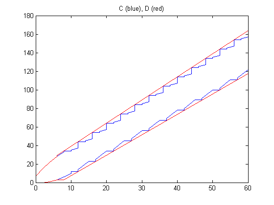
The approximations are shown in red color and the original curves in blue.
Let us now consider a better approximation with aperiodic parts finishing again at px0New = 6 but now with periodic parts afterward with a period pdxNew = 20.
D = rtcapprox(C,6,20); rtcplot(C,'b', D, 'r', 60); title('C (blue), D (red)');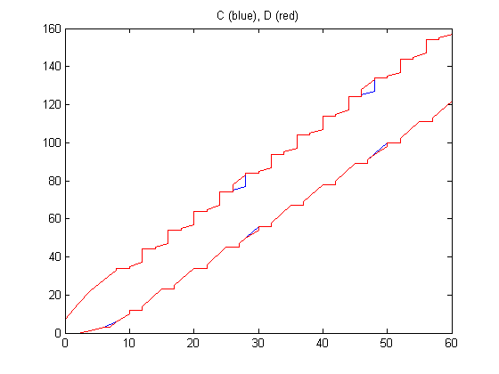
We can also consider completely periodic approximations where px0New = 0 and pdxNew = 20.
D = rtcapprox(C,0,20); rtcplot(C,'b', D, 'r', 60); title('C (blue), D (red)');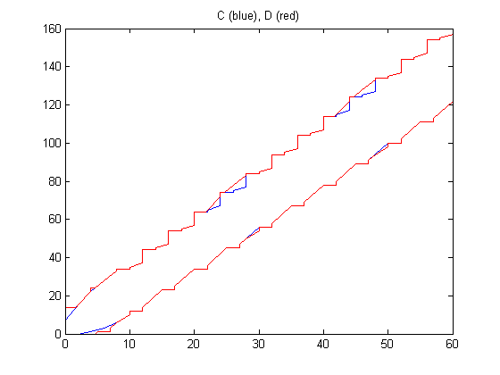
The simplest approximations will be the ones containing only aperiodic parts with a single segment.
D = rtcapprox(C,0,0); rtcplot(C,'b', D, 'r', 60); title('C (blue), D (red)');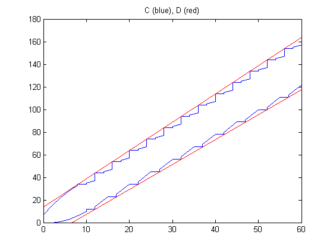
Extracting PJD Parameters from Curves
Many schedulability techniques rely on standard event arrival patterns specified with the three parameters: P-period, J-jitter, and D-minimum interarrival distance between events. In some cases it is necessary to convert the more general event model of arrival curves into this more restricted PJD model. As was the case with the approximation of curves, computations done with the derived PJD model are more pessimistic but they still should be valid.
The RTC Toolbox provides the function rtcconvpjd which returns the PJD parameters of a set of curves. If an optional period input parameter is provided, it will also compute a step size s, i.e. the increase in Y direction for the arrival of a single event. Otherwise, the assumed step size is 1.
Consider the following upper and lower curves:
AU = rtccurve([[0,1,1];[2,5,1.5];[4,8,1.5];[6,11,0.5]], [[0 1 0];[2 2 1]], 8, 11, 4, 4); AL = rtccurve([[0,0,0];[4,1,1.5];[10,11,0]], [[0 1 0];[2 2 1]], 17, 11, 4, 4);
Let us compute the j,d, and s parameters when period = 3:
[p j d s] = rtcconvpjd([AU AL], 3);
fprintf('p = %g ; j = %g ; d = %g ; s = %g \n',p ,j, d, s);
p = 3 ; j = 6 ; d = 1.33319 ; s = 3
Construct a set of PJD curves from the computed parameters and scale them according to the computed step size for a single event:
B = rtcpjd(p,j,d); B = rtctimes(B, s);
Plot the original and the computed PJD curves.
rtcplot([AU AL], 'r', B, 'b', 30); title('AU and AL (red), B (blue)');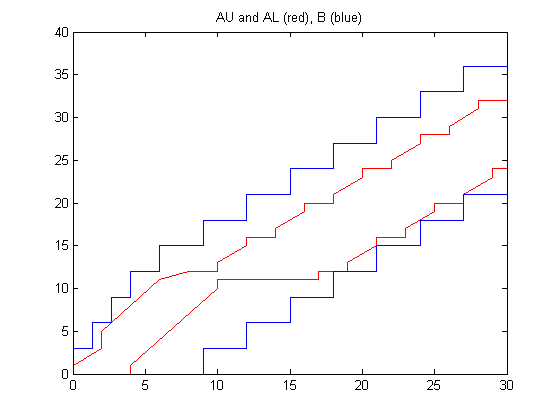
Improving the Accuracy by Using Curves with Additivity
Very often a designer does not have in advance curves that bound the timing of event stream arrivals or the availability of resources but she needs to compute them from finite-length traces obtained from simulations. The curves constructed out of simulation traces usually may not possess the property of additivity, i.e. sub-additivity for upper curves and super-additivity for lower curves. The same result is true for curves constructed from several others by using operators, e.g. rtcmin or rtcmax. Making a pair of upper and lower curves additive does not violate their safety but moreover, it makes the bounds computed with them more accurate (tighter). The function rtctighten(X,n) will tighten a pair of upper and lower curves X by making them additive. It computes the closures of the two curves by using n fixed point iterations, i.e. 2^n convolutions. It can be applied to single curves too as shown in the following example.
Let us consider the curve f that is not sub-additive:
f = rtccurve([[0 0 1]], [[0 0 0.25]], 2, 3, 4, 2);
This can be corrected with the following command:
t = rtctighten([f;rtccurve([[0, 0, 0]])],5);
Plot the original curve f and its sub-additive closure t:
rtcplot(f,'b',t,'r',20); title('f (blue), t (red)');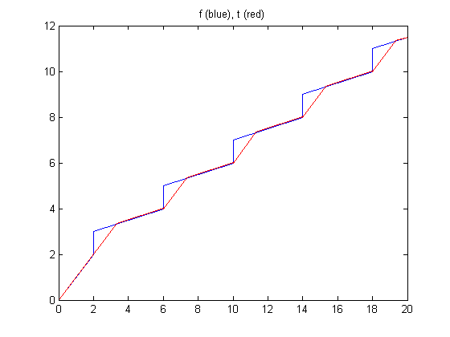
For more details on the actual definitions and properties of sub-additivity and sub-additive closure please see: Jean-Yves Le Boudec and Patrick Thiran. Network calculus: a theory of deterministic queuing systems for the internet, volume 2050 of LNCS. Springer-Verlag, 2001.